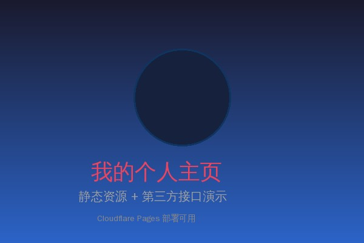

静态资源 - 本地图片
以下图片为本地静态资源，与 index.html 放在同一目录下，通过相对路径引用：

图片说明：将 my-photo.jpg 与本 HTML 文件放在同一文件夹中即可显示
第三方接口请求
点击下方按钮，通过 JavaScript 的 fetch API 请求第三方公开接口数据：
等待请求... 点击上方按钮获取数据
以下图片为本地静态资源，与 index.html 放在同一目录下，通过相对路径引用：

图片说明：将 my-photo.jpg 与本 HTML 文件放在同一文件夹中即可显示
点击下方按钮，通过 JavaScript 的 fetch API 请求第三方公开接口数据：